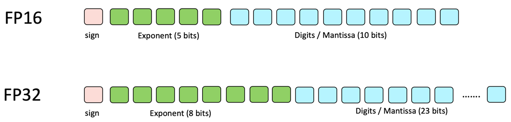
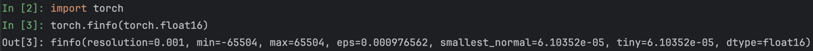
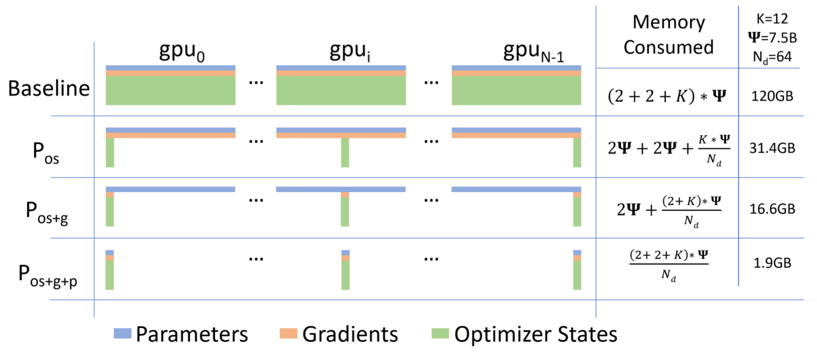
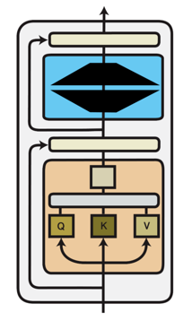
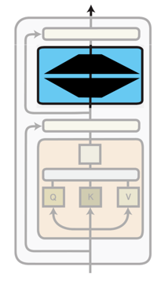
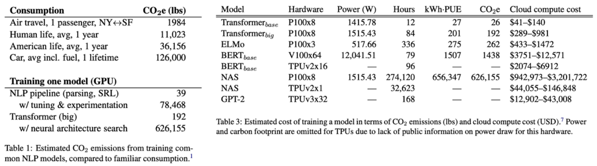

Advanced machine learning
Efficient Neural Network Training
Alex Avdiushenko
April 16, 2025
Lecture Plan
- Mixed Precision Training
- Multi-GPU Training with DDP/FSDP
- Parameter Efficient Finetuning: LoRA
Floating Points 101
FP32
Memory requirement: 4 bytes

$\left(-1\right)^{S} \times 2^{E-127} \times \left(1 + \sum\limits_{i=1}^{23} b_{23-i} 2^{-i}\right)$
range precision
Can represent $[2^k, 2^k(1+\varepsilon), 2^k(1+2\varepsilon), \dots, 2^{k+1}]$, where $\varepsilon = 2^{-23}$
Floating Points 101

Half-precision for training neural networks?
- Standard Neural Network Training: Model parameters and gradients represented in FP32 (CUDA Out-Of-Memory errors with large models)
- Possible solution: Use FP16!
Possible solution: Use FP16!
- Less range: Roughly 2e-14 to 2e15 on both sides
- Smaller precision leads to rounding errors: 1.0001 is 1 in half precision
- For Neural Net training:
- Gradients can underflow
- Weight updates are imprecise

Solution: Mixed Precision Training
Still use FP16, but use FP32 for neural network updates!
- Maintain a copy of model parameters in FP32 (Master weights)
- Run forward pass in FP16
- Scale loss by a large value (to artificially increase gradient)
- Compute gradient in FP16
- Copy gradient into FP32 and divide by scale factor
- Update master weights in FP32 [fixes weight update issue!]
- Copy into FP16 version
Can we get rid of gradient scaling?
- We need scaling because FP16 has a small range compared to FP32
- Can we allocate 8 bits for exponent (same range) while sacrificing precision?
- Bfloat16 can represent smaller numbers and much larger numbers:
Multi-GPU Training
- What's stored on GPU VRAM?
- Model parameters (in FP16)
- Optimizer: Master weights (FP32) + Adam momentum (FP32) + Adam variance (FP32)
Fully Sharded Data Parallel (FSDP)
High-level sketch:
- Divide model parameters into FSDP units
- Shard each unit across multiple GPUs
- Run forward pass
- Run backward pass
- Each GPU updates its own shard using the full gradient received earlier
From Fine-Tuning to Parameter-Efficient Fine-Tuning
Full Fine-tuning
Update all model parameters
PEFT
Update a small subset of model parameters
- Why fine-tune only some parameters?
- Fine-tuning all parameters is impractical with large models
- PEFT matches performance of full fine-tuning

Source: Strubell et al. 2019, Energy and Policy Considerations for Deep Learning in NLP
Full Finetuning
- Assume we have a pre-trained autoregressive language model \( P_{\phi}(y|x) \)
- E.g., GPT based on Transformer
- Adapt this pre-trained model to downstream tasks
(e.g., summarization, NL2SQL, reading comprehension)
- Training dataset of context-target pairs \( \{(x_i, y_i)\}_{i=1,...,N} \)
- During full fine-tuning, we update \( \phi_0 \) to \( \phi_0 + \Delta \phi \) by following the gradient to maximize the conditional language modeling objective
PEFT
- For each downstream task, we learn a different set of parameters \( \Delta \phi \)
- \(| \Delta \phi | = | \phi_0 |\)
- GPT-3 has a \( | \phi_0 | \) of 175 billion
- Expensive and challenging for storing and deploying many independent instances
- Can we do better?
- Key idea: encode the task-specific parameter increment \( \Delta \phi = \Delta \phi (\Theta) \) by a smaller-sized set of parameters \( \Theta \), \( | \Theta | \ll | \phi_0 | \)
- The task of finding \( \Delta \phi \) becomes optimizing over \( \Theta \)
Low-rank-parameterized update matrices
- Updates to the weights have a low “intrinsic rank” during adaptation [Aghajanyan et al. 2020]
- \( W_0 \in \mathbb{R}^{d \times k} \): a pre-trained weight matrix
- Constrain its update with a low-rank decomposition:
- \(\alpha\) is the tradeoff between pre-trained “knowledge” and task-specific “knowledge”
- Only \( A \) and \( B \) contain trainable parameters
Low-rank-parameterized update matrices
- As one increases the number of trainable parameters, training LoRA converges to training the original model
- No additional inference latency: when switching to a different task, recover \( W_0 \) by subtracting \( B A \) and adding a different \( B'A' \)
- Often LoRA is applied to the weight matrices in the self-attention module
Source: https://lightning.ai/pages/community/article/lora-llm/
Summary
-
Mixed Precision Training
- FP32 requires a large amount of memory; using FP16 reduces memory footprint
- FP16 has a smaller range and lower precision, leading to potential issues with gradient updates
- Solution: Mixed precision with FP32 for weights and FP16 for forward pass, using scaling techniques or BFloat16
-
Multi-GPU Training
- Data Parallelism (e.g., DDP) and Fully Sharded Data Parallel (FSDP) help distribute model parameters and computation across GPUs
- FSDP is complex to set up but offers better memory efficiency
-
Low-Rank Adaptation (LoRA)
- Reduces the number of trainable parameters by representing updates in a low-rank form, often applied in self-attention layers
- Can incur a slight increase in training complexity but maintains inference speed